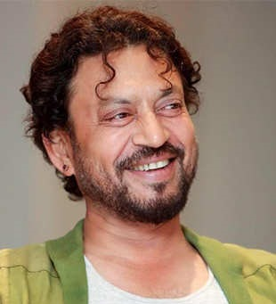

IRFAN KHAN
7 January 1967 – 29 April 2020
One of the greatest actor of Bollywood
Sahabzade Irfan Ali Khan was an Indian actor, known for his work predominantly in Hindi cinema, in addition to British and American films.

Some legends never die
Early Life and Education
- Khan was born in Rajasthan to a Muslim family of Pathan ancestry. Khan's mother, Saeeda Begum Khan, and father, Yaseen Ali Khan, were from the Khajuriya village near Rajasthan's Tonk district, and ran a tyre business.
- Irrfan was good at cricket and was selected to play in the CK Nayudu Trophy for emerging players in the under-23 category, a tournament seen as a stepping stone to first-class cricket in India.
- Khan completed his MA in Jaipur before joining National School of Drama (NSD) in New Delhi in 1984 to study acting.
National Recognition
- His first Bollywood lead role came in 2005 with film Rog. His performance was praised by critics; one wrote, "Irfaan's eyes speak louder than his words and every time he is in frame, be it talking to his buddy Manish or arguing with Suhel, he shows his capability as an actor"
- In 2004, he won the Filmfare Best Villain Award for his role in film Haasil.
- In 2007, he appeared in the box office hits Life in a... Metro, for which he received the Filmfare Best Supporting Actor Award
International Success
- Khan played a police inspector in the 2008 film Slumdog Millionaire, for which he and the cast of the movie won a Screen Actors Guild Award for Outstanding Performance by a Cast in a Motion Picture.
- His film, Paan Singh Tomar, about real-life athlete turned dacoit, for which he won the National Film Award for Best Actor
- In 2013, he starred in The Lunchbox, which won the Grand Rail d'Or at Cannes Film Festival and received a BAFTA nomination, and became his highest-grossing Hindi film up until then.
- As of 2017, his films have grossed US$3.643 billion at the worldwide box office.
Personal Life
- In February 1995, Khan married writer and fellow NSD graduate Sutapa Sikdar. They had two sons.
- In 2012, he changed his name from Irfan to Irrfan; he said he liked the sound of the extra r in his name. He later dropped Khan from his name because—according to a 2016 interview—he wanted his work to define him, not his lineage
Illness and Death
- In March 2018, Khan revealed via a tweet that he had been diagnosed with a neuroendocrine tumor.He sought treatment in the UK for a year, returning in February 2019
- He was admitted to Mumbai's Kokilaben Dhirubhai Ambani Hospital on 28 April 2020, where he started receiving treatment for a colon infection. He died the following day at age 53, from the infection.